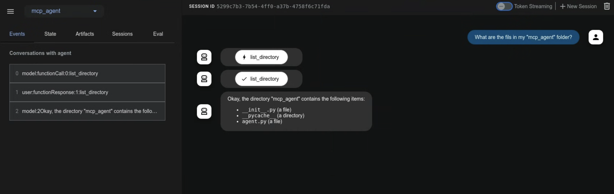
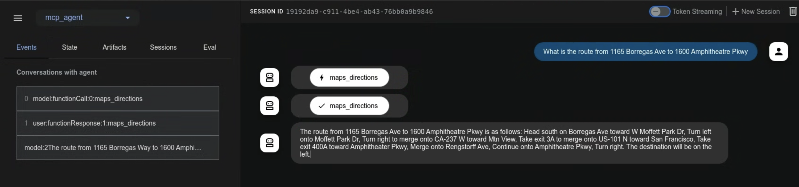

Model Context Protocol ツール¶
このガイドでは、Agent Development Kit (ADK) と Model Context Protocol (MCP) を統合する2つの方法について説明します。
Model Context Protocol (MCP) とは？¶
Model Context Protocol (MCP) は、GeminiやClaudeのような大規模言語モデル (LLM) が外部のアプリケーション、データソース、ツールとどのように通信するかを標準化するために設計されたオープンスタンダードです。LLMがコンテキストを取得し、アクションを実行し、さまざまなシステムと対話する方法を簡素化する、普遍的な接続メカニズムと考えることができます。
MCPはクライアントサーバーアーキテクチャに従い、データ (リソース)、対話型テンプレート (プロンプト)、および実行可能な関数 (ツール) がMCPサーバーによってどのように公開され、MCPクライアント (LLMホストアプリケーションやAIエージェントなど) によってどのように消費されるかを定義します。
このガイドでは、2つの主要な統合パターンを取り上げます：
- ADK内で既存のMCPサーバーを使用する： ADKエージェントがMCPクライアントとして機能し、外部のMCPサーバーによって提供されるツールを活用します。
- MCPサーバーを介してADKツールを公開する： ADKツールをラップするMCPサーバーを構築し、任意のMCPクライアントからアクセスできるようにします。
前提条件¶
始める前に、以下の設定が完了していることを確認してください：
- ADKのセットアップ： クイックスタートの標準的なADKセットアップ手順に従ってください。
- Python/Javaのインストール/アップデート： MCPは、Pythonの場合はバージョン3.9以上、Javaの場合は17以上が必要です。
- Node.jsとnpxのセットアップ： (Pythonのみ) 多くのコミュニティMCPサーバーはNode.jsパッケージとして配布され、
npxを使用して実行されます。まだインストールしていない場合は、Node.js（npxを含む）をインストールしてください。詳細はhttps://nodejs.org/enを参照してください。 - インストールの確認： (Pythonのみ) 有効化された仮想環境内で、
adkとnpxがPATHにあることを確認します：
1. adk webでADKエージェントとMCPサーバーを使用する（ADKをMCPクライアントとして）¶
このセクションでは、外部のMCP (Model Context Protocol) サーバーからのツールをADKエージェントに統合する方法を示します。これは、ADKエージェントがMCPインターフェースを公開する既存のサービスによって提供される機能を使用する必要がある場合に最も一般的な統合パターンです。MCPToolsetクラスをエージェントのtoolsリストに直接追加することで、MCPサーバーへのシームレスな接続、そのツールの発見、そしてエージェントが使用できるようにする方法を見ていきます。これらの例は、主にadk web開発環境内での対話に焦点を当てています。
MCPToolsetクラス¶
MCPToolsetクラスは、MCPサーバーからツールを統合するためのADKの主要なメカニズムです。エージェントのtoolsリストにMCPToolsetインスタンスを含めると、指定されたMCPサーバーとの対話が自動的に処理されます。仕組みは次のとおりです：
- 接続管理： 初期化時に、
MCPToolsetはMCPサーバーへの接続を確立し、管理します。これは、ローカルのサーバープロセス（標準入出力を介した通信のためのStdioServerParametersを使用）またはリモートサーバー（サーバー送信イベントのためのSseServerParamsを使用）の場合があります。ツールセットは、エージェントまたはアプリケーションが終了する際に、この接続を適切にシャットダウンする処理も行います。 - ツールの発見と適応： 接続されると、
MCPToolsetはMCPサーバーに利用可能なツールを問い合わせ（MCPのlist_toolsメソッド経由）、発見されたこれらのMCPツールのスキーマをADK互換のBaseToolインスタンスに変換します。 - エージェントへの公開： これらの適応されたツールは、ネイティブのADKツールであるかのように
LlmAgentで利用可能になります。 - ツール呼び出しのプロキシ：
LlmAgentがこれらのツールの1つを使用することを決定すると、MCPToolsetは呼び出しを透過的にMCPサーバーにプロキシし（MCPのcall_toolメソッドを使用）、必要な引数を送信し、サーバーの応答をエージェントに返します。 - フィルタリング（オプション）：
MCPToolsetを作成する際にtool_filterパラメータを使用して、MCPサーバーからすべてのツールをエージェントに公開するのではなく、特定のサブセットを選択できます。
以下の例では、adk web開発環境内でMCPToolsetを使用する方法を示します。MCP接続ライフサイクルのよりきめ細かな制御が必要な場合や、adk webを使用していないシナリオについては、このページの後半の「adk web外で自分のエージェントでMCPツールを使用する」セクションを参照してください。
例1：ファイルシステムMCPサーバー¶
この例では、ファイルシステム操作を提供するローカルのMCPサーバーに接続する方法を示します。
ステップ1：MCPToolsetでエージェントを定義する¶
agent.pyファイルを作成します（例：./adk_agent_samples/mcp_agent/agent.py）。MCPToolsetはLlmAgentのtoolsリスト内で直接インスタンス化されます。
- 重要：
argsリストの"/path/to/your/folder"を、MCPサーバーがアクセスできるローカルシステム上の実際のフォルダの絶対パスに置き換えてください。 - 重要：
.envファイルを./adk_agent_samplesディレクトリの親ディレクトリに配置してください。
# ./adk_agent_samples/mcp_agent/agent.py
import os # パス操作に必要
from google.adk.agents import LlmAgent
from google.adk.tools.mcp_tool.mcp_toolset import MCPToolset, StdioServerParameters
# 可能であればパスを動的に定義するか、
# ユーザーが絶対パスの必要性を理解していることを確認するのが良い習慣です。
# この例では、このファイルからの相対パスを構築します。
# '/path/to/your/folder'がagent.pyと同じディレクトリにあると仮定します。
# セットアップに合わせて、これを実際の絶対パスに置き換えてください。
TARGET_FOLDER_PATH = os.path.join(os.path.dirname(os.path.abspath(__file__)), "your_folder")
# TARGET_FOLDER_PATHがMCPサーバーの絶対パスであることを確認してください。
# ./adk_agent_samples/mcp_agent/your_folderを作成した場合、
root_agent = LlmAgent(
model='gemini-2.0-flash',
name='filesystem_assistant_agent',
instruction='ユーザーのファイル管理を手伝ってください。ファイルのリスト表示や読み取りなどができます。',
tools=[
MCPToolset(
connection_params=StdioServerParameters(
command='npx',
args=[
"-y", # npxがインストールを自動確認するための引数
"@modelcontextprotocol/server-filesystem",
# 重要：これはnpxプロセスがアクセスできるフォルダへの
# 絶対パスでなければなりません。
# システム上の有効な絶対パスに置き換えてください。
# 例："/Users/youruser/accessible_mcp_files"
# または動的に構築された絶対パスを使用：
os.path.abspath(TARGET_FOLDER_PATH),
],
),
# オプション：MCPサーバーから公開されるツールをフィルタリング
# tool_filter=['list_directory', 'read_file']
)
],
)
ステップ2：__init__.pyファイルを作成する¶
agent.pyと同じディレクトリに__init__.pyがあることを確認し、ADKが発見可能なPythonパッケージになるようにします。
ステップ3：adk webを実行して対話する¶
ターミナルでmcp_agentの親ディレクトリ（例：adk_agent_samples）に移動し、実行します：
Windowsユーザーへの注意
_make_subprocess_transport NotImplementedErrorが発生した場合、代わりにadk web --no-reloadの使用を検討してください。
ADK Web UIがブラウザで読み込まれたら：
- エージェントのドロップダウンから
filesystem_assistant_agentを選択します。 - 以下のようなプロンプトを試してください：
- "現在のディレクトリのファイルをリスト表示して"
- "sample.txtという名前のファイルを読めますか？"（
TARGET_FOLDER_PATHに作成した場合） - "
another_file.mdの内容は何ですか？"
エージェントがMCPファイルシステムサーバーと対話し、サーバーの応答（ファイルリスト、ファイル内容）がエージェントを通じて中継されるのが見えるはずです。adk webコンソール（コマンドを実行したターミナル）には、npxプロセスがstderrに出力する場合、そのログも表示されることがあります。

例2：Google Maps MCPサーバー¶
この例では、Google Maps MCPサーバーへの接続を示します。
ステップ1：APIキーの取得とAPIの有効化¶
- Google Maps APIキー： APIキーを使用するの指示に従って、Google Maps APIキーを取得します。
- APIの有効化： Google Cloudプロジェクトで、以下のAPIが有効になっていることを確認します：
- Directions API
- Routes API 手順については、Google Maps Platform入門のドキュメントを参照してください。
ステップ2：Google Maps用のMCPToolsetでエージェントを定義する¶
agent.pyファイルを変更します（例：./adk_agent_samples/mcp_agent/agent.py）。YOUR_GOOGLE_MAPS_API_KEYを、取得した実際のAPIキーに置き換えます。
# ./adk_agent_samples/mcp_agent/agent.py
import os
from google.adk.agents import LlmAgent
from google.adk.tools.mcp_tool.mcp_toolset import MCPToolset, StdioServerParameters
# 環境変数からAPIキーを取得するか、直接挿入します。
# 環境変数を使用する方が一般的に安全です。
# 'adk web'を実行するターミナルでこの環境変数が設定されていることを確認してください。
# 例：export GOOGLE_MAPS_API_KEY="YOUR_ACTUAL_KEY"
google_maps_api_key = os.environ.get("GOOGLE_MAPS_API_KEY")
if not google_maps_api_key:
# テスト用のフォールバックまたは直接割り当て - 本番環境では非推奨
google_maps_api_key = "YOUR_GOOGLE_MAPS_API_KEY_HERE" # 環境変数を使用しない場合は置き換える
if google_maps_api_key == "YOUR_GOOGLE_MAPS_API_KEY_HERE":
print("警告：GOOGLE_MAPS_API_KEYが設定されていません。環境変数として、またはスクリプトで設定してください。")
# キーが重要で、見つからない場合はエラーを発生させるか終了させることを検討してください。
root_agent = LlmAgent(
model='gemini-2.0-flash',
name='maps_assistant_agent',
instruction='Google Mapsツールを使用して、マッピング、道案内、場所の検索でユーザーを支援します。',
tools=[
MCPToolset(
connection_params=StdioServerParameters(
command='npx',
args=[
"-y",
"@modelcontextprotocol/server-google-maps",
],
# APIキーをnpxプロセスに環境変数として渡す
# これがGoogle Maps用MCPサーバーがキーを期待する方法です。
env={
"GOOGLE_MAPS_API_KEY": google_maps_api_key
}
),
# 必要に応じて特定のMapsツールをフィルタリングできます：
# tool_filter=['get_directions', 'find_place_by_id']
)
],
)
ステップ3：__init__.pyの存在を確認する¶
例1で作成した場合は、このステップをスキップできます。そうでない場合は、./adk_agent_samples/mcp_agent/ディレクトリに__init__.pyがあることを確認してください：
ステップ4：adk webを実行して対話する¶
-
環境変数の設定（推奨）：
adk webを実行する前に、ターミナルでGoogle Maps APIキーを環境変数として設定するのが最善です：YOUR_ACTUAL_GOOGLE_MAPS_API_KEYをあなたのキーに置き換えてください。 -
adk webの実行：mcp_agentの親ディレクトリ（例：adk_agent_samples）に移動し、実行します： -
UIでの対話：
maps_assistant_agentを選択します。- 以下のようなプロンプトを試してください：
- "GooglePlexからSFOまでの道順を教えて"
- "ゴールデンゲートパークの近くのコーヒーショップを探して"
- "フランスのパリからドイツのベルリンまでのルートは？"
エージェントがGoogle Maps MCPツールを使用して道案内や場所に基づいた情報を提供するのが見えるはずです。

2. ADKツールを持つMCPサーバーの構築（ADKを公開するMCPサーバー）¶
このパターンでは、既存のADKツールをラップし、標準的なMCPクライアントアプリケーションで利用できるようにします。このセクションの例では、カスタムビルドのMCPサーバーを介してADKのload_web_pageツールを公開します。
手順の概要¶
mcpライブラリを使用して、標準的なPythonのMCPサーバーアプリケーションを作成します。このサーバー内で、以下のことを行います：
- 公開したいADKツールをインスタンス化します（例：
FunctionTool(load_web_page)）。 - MCPサーバーの
@app.list_tools()ハンドラを実装して、ADKツールを宣伝します。これには、google.adk.tools.mcp_tool.conversion_utilsのadk_to_mcp_tool_typeユーティリティを使用して、ADKツールの定義をMCPスキーマに変換することが含まれます。 - MCPサーバーの
@app.call_tool()ハンドラを実装します。このハンドラは：- MCPクライアントからツール呼び出しリクエストを受け取ります。
- リクエストがラップされたADKツールを対象としているかどうかを識別します。
- ADKツールの
.run_async()メソッドを実行します。 - ADKツールの結果をMCP準拠の応答（例：
mcp.types.TextContent）にフォーマットします。
前提条件¶
ADKのインストールと同じPython環境にMCPサーバーライブラリをインストールします：
ステップ1：MCPサーバースクリプトの作成¶
MCPサーバー用に新しいPythonファイルを作成します。例：my_adk_mcp_server.py。
ステップ2：サーバーロジックの実装¶
my_adk_mcp_server.pyに以下のコードを追加します。このスクリプトは、ADKのload_web_pageツールを公開するMCPサーバーをセットアップします。
ステップ3：カスタムMCPサーバーをADKエージェントでテストする¶
次に、作成したMCPサーバーのクライアントとして機能するADKエージェントを作成します。このADKエージェントはMCPToolsetを使用してmy_adk_mcp_server.pyスクリプトに接続します。
agent.pyを作成します（例：./adk_agent_samples/mcp_client_agent/agent.py）：
# ./adk_agent_samples/mcp_client_agent/agent.py
import os
from google.adk.agents import LlmAgent
from google.adk.tools.mcp_tool.mcp_toolset import MCPToolset, StdioServerParameters
# 重要：これをあなたのmy_adk_mcp_server.pyスクリプトへの絶対パスに置き換えてください
PATH_TO_YOUR_MCP_SERVER_SCRIPT = "/path/to/your/my_adk_mcp_server.py" # <<< 置き換える
if PATH_TO_YOUR_MCP_SERVER_SCRIPT == "/path/to/your/my_adk_mcp_server.py":
print("警告：PATH_TO_YOUR_MCP_SERVER_SCRIPTが設定されていません。agent.pyで更新してください。")
# パスが重要な場合はエラーを発生させることを検討してください
root_agent = LlmAgent(
model='gemini-2.0-flash',
name='web_reader_mcp_client_agent',
instruction="ユーザーから提供されたURLのコンテンツを取得するために'load_web_page'ツールを使用してください。",
tools=[
MCPToolset(
connection_params=StdioServerParameters(
command='python3', # MCPサーバースクリプトを実行するコマンド
args=[PATH_TO_YOUR_MCP_SERVER_SCRIPT], # 引数はスクリプトへのパス
)
# tool_filter=['load_web_page'] # オプション：特定のツールのみがロードされるようにする
)
],
)```
そして、同じディレクトリに`__init__.py`を作成します：
```python
# ./adk_agent_samples/mcp_client_agent/__init__.py
from . import agent
テストを実行するには：
-
カスタムMCPサーバーの起動（オプション、個別の観察のため）：
「Launching MCP Server...」と表示され、待機します。my_adk_mcp_server.pyを1つのターミナルで直接実行して、そのログを確認できます：StdioServerParametersのcommandがそれを実行するように設定されていれば、ADKエージェント（adk web経由で実行）がこのプロセスに接続します。 （または、エージェントが初期化されるときにMCPToolsetがこのサーバースクリプトをサブプロセスとして自動的に開始します）。 -
クライアントエージェントのために
adk webを実行：mcp_client_agentの親ディレクトリ（例：adk_agent_samples）に移動し、実行します： -
ADK Web UIでの対話：
web_reader_mcp_client_agentを選択します。- 「https://example.comからコンテンツをロードして」のようなプロンプトを試してください。
ADKエージェント（web_reader_mcp_client_agent）はMCPToolsetを使用してmy_adk_mcp_server.pyを開始し、接続します。あなたのMCPサーバーはcall_toolリクエストを受け取り、ADKのload_web_pageツールを実行し、結果を返します。ADKエージェントはその情報を中継します。ADK Web UI（およびそのターミナル）と、もし別々に実行していればmy_adk_mcp_server.pyターミナルの両方からログが表示されるはずです。
この例は、ADKツールをMCPサーバー内にカプセル化し、ADKエージェントだけでなく、より広範なMCP準拠のクライアントからアクセスできるようにする方法を示しています。
Claude Desktopで試すには、ドキュメントを参照してください。
adk web外で自分のエージェントでMCPツールを使用する¶
このセクションは、以下の場合に関連します：
- ADKを使用して独自のエージェントを開発している
- そして、
adk webを使用していない - そして、独自のUIを介してエージェントを公開している
MCPツールの仕様は、リモートまたは別のプロセスで実行されているMCPサーバーから非同期に取得されるため、MCPツールの使用には通常のツールとは異なるセットアップが必要です。
以下の例は、上記の「例1：ファイルシステムMCPサーバー」の例を修正したものです。主な違いは次のとおりです：
- ツールとエージェントが非同期に作成される
- MCPサーバーへの接続が閉じられたときにエージェントとツールが適切に破棄されるように、exitスタックを適切に管理する必要がある
主な考慮事項¶
MCPとADKを扱う際には、以下の点に留意してください：
-
プロトコル vs. ライブラリ： MCPは通信ルールを定義するプロトコル仕様です。ADKはエージェントを構築するためのPythonライブラリ/フレームワークです。MCPToolsetは、ADKフレームワーク内でMCPプロトコルのクライアント側を実装することで、これらを橋渡しします。逆に、PythonでMCPサーバーを構築するには、model-context-protocolライブラリを使用する必要があります。
-
ADKツール vs. MCPツール：
- ADKツール（BaseTool、FunctionTool、AgentToolなど）は、ADKのLlmAgentとRunner内で直接使用するために設計されたPythonオブジェクトです。
- MCPツールは、プロトコルのスキーマに従ってMCPサーバーによって公開される機能です。MCPToolsetは、これらをLlmAgentにとってADKツールのように見せかけます。
- Langchain/CrewAIツールは、それらのライブラリ内の特定の実装であり、多くの場合、単純な関数やクラスであり、MCPのサーバー/プロトコル構造を欠いています。ADKは、一部の相互運用性のためにラッパー（LangchainTool、CrewaiTool）を提供します。
-
非同期性： ADKとMCP Pythonライブラリは、どちらもPythonのasyncioライブラリに大きく基づいています。ツールの実装とサーバーハンドラは、一般的にasync関数であるべきです。
-
ステートフルセッション（MCP）： MCPは、クライアントとサーバーインスタンス間にステートフルで永続的な接続を確立します。これは、一般的なステートレスなREST APIとは異なります。
- デプロイ： このステートフル性は、特に多くのユーザーを処理するリモートサーバーのスケーリングとデプロイにおいて課題をもたらす可能性があります。元のMCP設計は、クライアントとサーバーが同じ場所に配置されていることをしばしば想定していました。これらの永続的な接続を管理するには、慎重なインフラストラクチャの考慮が必要です（例：ロードバランシング、セッションアフィニティ）。
- ADK MCPToolset： この接続ライフサイクルを管理します。例に示されているexit_stackパターンは、ADKエージェントが終了したときに接続（および場合によってはサーバープロセス）が適切に終了されることを保証するために重要です。